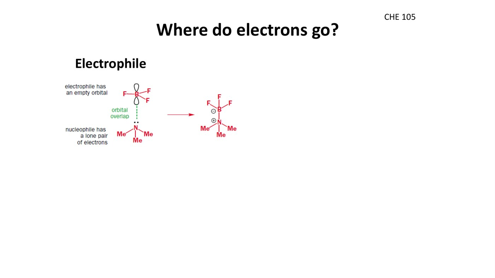
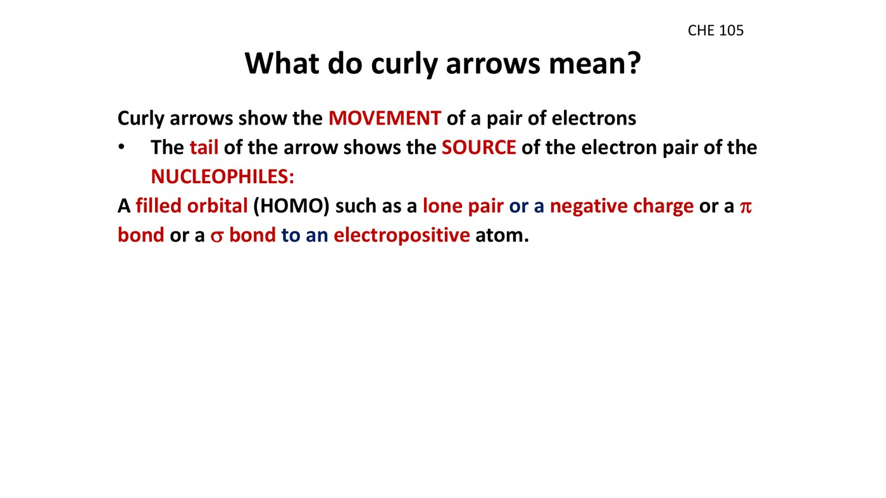
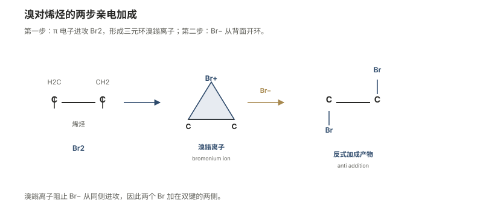

CHE105 · 第 5 章
有机反应机理：电荷、HOMO–LUMO 与箭头
Organic Reactions: Charge, HOMO–LUMO & Curly Arrows
虚线下划线为术语；悬停查看中文、英文与释义，完整词典见“术语”。
本章目录
前四章讲"分子长什么样"，这一章讲"它为什么会变"。核心只有一句话：电子从填满的高能轨道流向空着的低能轨道；而弯箭头（curly arrow）就是这句话的书写方式。
本章要点
- 分子之间天然排斥，因为外层都是电子；有机反应靠电荷、偶极与轨道重叠来"抵消"这种排斥。
- 亲核试剂（Nu）提供电子，进攻缺电子中心；亲电试剂（E）接受电子，是电子的去处。
- 反应能否发生取决于 HOMO 与 LUMO 的能量差：能级越接近、重叠越好，能量降幅越大。
- 除能量外还需要正确的取向：取向不对，轨道无法有效重叠，碰撞无效。
- 弯箭头表示一对电子的移动，尾是来源（HOMO），头是去向（LUMO）。
- 箭头只能从孤对、负电荷、π 键或 σ 键出发；不能从正电荷或没有孤对的原子出发。
- 电荷在反应中守恒；与不带电的 H、C、N、O 成键时，必须在同一步断一根键。
- 画机理有固定流程：读条件 → 对比反应物与产物 → 找亲核/亲电中心 → 画箭头 → 检查价与电荷。
5.1 为什么分子通常不反应
讲义先泼了一盆冷水：并不是所有分子碰撞都会发生化学变化。原因很朴素——每个分子的外层都包着一层电子，两个分子靠近时，电子云先互相排斥。要让反应发生，必须有一股吸引力先克服这股排斥。
在无机化学里，这股吸引力常常是正负离子之间的静电吸引，很强、很直接。但在有机化学里，完整的正负离子相遇是少数情况；更常见的是中性分子之间的相互作用，吸引力弱得多，所以有机反应往往需要加热或催化剂。
讲义把可能的吸引力归为三个层次：电荷（真正带电的离子）、部分电荷（偶极）、以及轨道重叠（HOMO 与 LUMO 的相互作用）。前两个解释"为什么靠近"，第三个解释"靠近之后电子往哪里流"。
L5 p.5–7、p.20
5.2 电荷与部分电荷
最直接的情形是带电试剂进攻一个中性但极化的分子。讲义举的例子是阴离子进攻带有偶极矩的有机分子：阴离子带完整的负电荷，分子的一端因电负性差异带部分正电（δ+），两者相互吸引，反应由此启动。
更精细的情形发生在羰基上。C=O 键中氧的电负性大于碳，电子被拉向氧，于是氧带部分负电、碳带部分正电。这个偶极能让羰基与两类物种作用：与富电子的 NH3（氮上有孤对）作用时，氨扮演电子给体，进攻缺电子的碳；与缺电子的 BF3（硼上有一个空 p 轨道）作用时，角色反过来——羰基氧上的孤对电子流向硼的空轨道。
同一个羰基，既能接受电子，也能提供电子，取决于对手是谁。这一点很重要：它说明"亲核"与"亲电"不是分子的固有标签，而是在某一具体反应中的角色。
L5 p.8–12
5.3 亲核试剂与亲电试剂
亲核试剂nucleophile（Nu）是电子的来源。它至少有一对可以给出的电子，形式可以是孤对、负电荷、π 键，或者一根连在电正性原子上的 σ 键。常见的有带孤对的 N、O、S 物种，碳负离子，以及烯烃的 π 键。
亲电试剂electrophile（E）是电子的去处。它必须有一个可以接受电子对的空轨道，形式可以是正电荷、中性分子上的空 p 轨道、π 键（其 π* 反键轨道可接受电子），或者一根连在电负性原子上的 σ 键（其 σ* 反键轨道可接受电子）。质子 H+、BF3、羰基碳、卤代烷的碳都是常见的亲电中心。
讲义特别提醒了一种"看起来该反应、实际不反应"的情形：无效排列unproductive arrangement。亲核试剂与亲电试剂确实靠近了，但两者的轨道取向不对，重叠为零，电子无法流动，碰撞白费。这解释了为什么"浓度高、温度高"并不总能提高反应速率——取向不对，能量再多也没用。

L5 p.13–16、p.21–31
5.4 HOMO–LUMO：反应的能量学
把亲核/亲电的语言翻译成轨道语言，就是 HOMOhighest occupied molecular orbital 与 LUMOlowest unoccupied molecular orbital。HOMO 是"已填充电子里能量最高的那个"，也就是最容易被拿出来的电子；LUMO 是"空轨道里能量最低的那个"，也就是最容易接受电子的位置。
反应是否有利，看两件事：两个轨道的能量是否接近，以及重叠是否有效。能量越接近，混合后成键轨道的能量降得越多；重叠越好，混合越充分。讲义用"能量降幅最大"来定义有利的排列——最稳定的产物来自最大的能量下降，而不是来自"最强"的试剂。
反过来说，如果两个轨道的能量差太大，即使产物本身很稳定，电子也难以流动——这就是"惰性分子"的轨道解释。碳与氢之间的 σ 键正是如此：它的 σ* 反键轨道能量太高，没有可接受电子的空位，所以 C–H 键在多数反应中只是"旁观者"。

Clean vector orbital energy diagram with two vertical columns: left column shows a filled HOMO of the nucleophile, right column shows an empty LUMO of the electrophile at higher energy, with two curved arrows showing electron flow from the filled orbital into the empty orbital; below, a single lower-energy bonding orbital is drawn to show the energy drop, annotated largest energy drop for the best-matched pair. Flat 2D, thin 1.5 px strokes, muted slate blue and warm grey palette, white background, English labels, no cartoon, no gradient, no shadow.
L5 p.17–20
5.5 反应的两个条件
讲义把前面所有内容收成一句话：为了让反应发生，两个分子必须以正确的方式靠近——有足够的能量克服排斥，有正确的取向利用吸引。两条缺一不可。
能量条件对应"能不能翻过能垒"，取向条件对应"翻了能不能落到正确的位置"。升温让更多分子具备翻越能垒的能量，但取向不对的碰撞仍然无效；增浓让碰撞次数增加，但无效碰撞的比例不变。
这也是"分子形状决定反应性"的真正含义。形状不是外观问题，它决定了分子的 HOMO 与 LUMO 在空间中的分布；分布决定了从哪个方向进攻才有效。第五章之后讲的所有机理，本质上都是在回答"哪个轨道、从哪个方向、流向哪个轨道"。

L5 p.20
5.6 弯箭头到底表示什么
弯箭头curly arrow是有机化学的"操作系统"：每一个机理、每一个共振结构、每一段电子流叙述，都用它书写。它表示的不是原子在动，也不是"反应往这边走"，而是一对电子的移动。
箭头的尾部标出这对电子的来源，也就是亲核试剂的 HOMO。合法的起点有四类：孤对电子、负电荷、π 键、以及连在电正性原子上的 σ 键。箭头的头部标出这对电子的去向，也就是亲电试剂的 LUMO。合法的终点包括：正电荷、带空 p 轨道的中性分子、π 键、以及连在电负性原子上的 σ 键。
两条铁律必须背下来。第一，电荷守恒：反应前后总电荷不变；如果箭头画完电荷对不上，箭头一定错了。第二，与不带电的 H、C、N、O 成键时，必须在同一步断一根键——因为这些原子没有可用的空轨道，无法在保持原配位数的同时接受一对新电子；要让它们多接一根键，就必须同时松开另一根。

Clean vector explanatory diagram of a single curved arrow: the tail starts at a lone pair drawn as two dots on a nitrogen atom labeled source, a filled HOMO; the head points to a carbon atom bearing a partial positive charge labeled destination, an empty LUMO; a side legend lists valid sources as lone pair, negative charge, pi bond, sigma bond, and valid destinations as positive charge, empty p orbital, pi star, sigma star. Flat 2D, thin 1.5 px strokes, muted slate blue and warm grey palette, white background, English labels, no cartoon, no gradient, no shadow.
L5 p.27–29；Master Curly Arrows p.3
5.7 箭头规则与四个常见错误
Master Curly Arrows 那份材料把规则拆得更细。除了"从头到尾表示一对电子"之外，还有两条关于"合法性"的要求。
起点必须真的拥有电子。合法的起点是：原子上的孤对、带负电的原子、双键或三键中的 π 键、以及反应中的 σ 键。常见的错误起点有两个：从一个孤零零的正电荷出发（正电荷表示"缺电子"，那里没有电子对可给），以及从一个既没有孤对也没有 π 键的普通原子出发。
终点必须能容纳这对电子。箭头落在某个原子上，要么形成一根新键，要么成为该原子上的一对孤对；如果落点会让该原子超过八隅体，这个箭头就是错的。换句话说，箭头不能"凭空多画一根键"。
把这两条与电荷守恒合起来，就得到一套可以机械执行的自检流程：画完箭头后，逐个原子数键数与孤对数，看是否满足价层要求；再算总电荷，看是否与反应物一致。任何一处不符，箭头需要修改——而不是"把产物改一改让它看起来合理"。
Master Curly Arrows p.3–6
5.8 画机理的八步法
讲义给了一套完整的操作流程，值得逐条照做——它是把"看懂机理"变成"写出机理"的桥。
- 按给定条件（酸、碱、溶剂）把试剂画成真实存在的结构，而不是只写分子式。
- 对比反应物与产物：找出新形成的键、断裂的键、移动的键、新增的基团、离去的基团。
- 找出亲核中心与亲电中心，判断哪一个最活泼。
- 如果两者的结合能给出目标产物，就把反应物画出来、标上电荷、按轨道要求摆到"能成键的距离"。
- 从亲核试剂的电子来源（键、电荷或孤对）画一根箭头，指向亲电试剂的空轨道——箭头头部落在新键的位置。
- 检查是否有原子"键太多"；若有，就从那根键的中心再画一根箭头，把电子对送到合适的地方（通常是电负性原子）。
- 按箭头指示写出产物：断掉箭头起点的键，形成箭头终点的键，然后核对电荷。若结构不对，说明箭头错了，回去改箭头而不是改产物。
- 重复第 5–7 步，直到得到稳定产物。
这套流程的关键在第六步："键太多"是发现隐藏断键的信号。初学者常犯的错是只画"形成新键"的箭头，忘了同时画"断开旧键"的箭头，结果产物中某个碳变成五价。只要养成"形成一根就检查一次价"的习惯，这类错误会立刻暴露。
L5 p.46
5.9 实例一：SN2 与质子转移
SN2 亲核取代。以硫醇负离子（thiolate）进攻带部分正电的碳为例。第一步也是唯一一步：硫上的孤对电子作为 HOMO，箭头从硫出发，指向那个碳；同时，碳与溴之间的 σ 键断裂，另一根箭头从 C–Br 键的中心出发，指向溴。两根箭头同时画出，表示"成键与断键同步发生"。结果是硫接到碳上、溴带着电子对离去，碳的构型发生翻转inversion——因为亲核试剂只能从离去基团的背面进攻，像伞被吹翻一样。
酸碱质子转移。以羰基化合物在酸中的质子转移为例，分两根箭头。第一根：羰基氧上的孤对电子进攻酸性质子，形成 O–H 键。第二根：相邻碳上的 C–H σ 键断裂，两个电子全部流向碳，碳由此获得一对孤对。这里第二根箭头的起点是 σ 键而不是原子——这正是"σ 键可以作为箭头起点"的典型用法。
两个例子对照：SN2 的两根箭头同时画（协同），质子转移的两根一前一后（先质子化，再去质子）。箭头分几步画，就表示反应分几步走。
Master Curly Arrows p.8–9、p.15
5.10 实例二：溴对烯烃的亲电加成
烯烃的 π 键是富电子的，遇到溴这类亲电试剂就会被进攻。这个反应分两步，两步之间有一个明确的中间体，因此箭头分两组画。
第一步：π 键作为电子来源，箭头从 C=C 的中间出发，指向溴原子；同时 Br–Br 的 σ 键断裂，另一根箭头从 Br–Br 键的中心指向另一个溴，让它带着电子对离去（成为 Br−）。结果是：一个碳与溴成键，另一个碳失去了 π 键的共享电子，变成缺电子的碳正离子carbocation。
第二步：第一步离去的溴离子作为亲核试剂，用它的孤对电子进攻碳正离子，箭头从 Br− 出发指向那个缺电子的碳，形成第二根 C–Br 键。产物是邻二溴化物。
这个例子的教学价值在于它展示了"中间体"的概念：碳正离子不是过渡态，而是一个真实存在、可以短暂存活的物种；第二步的箭头之所以能画，是因为第一步确实留下了一个带正电的碳。把两步合成一步画，虽然有时能得到同样的产物，但机理上是错的。

绘图提示词
Clean vector two-step mechanism diagram: step one shows ethene pi bond attacking a bromine molecule with a curved arrow from the C=C midpoint to Br and a second curved arrow breaking the Br-Br bond, giving a bromonium-like carbocation intermediate labeled carbocation; step two shows the bromide ion lone pair attacking the electron-deficient carbon with a curved arrow, giving 1,2-dibromoethane. Flat 2D, thin 1.5 px strokes, muted slate blue and warm grey palette with one warm accent for bromine, white background, English labels, no cartoon, no gradient, no shadow.
Master Curly Arrows p.10–11；L5 p.32–34
5.11 实例三：羰基上的加成与取代
氰醇形成。氰离子（CN−）是良好的亲核试剂，用碳上的孤对进攻羰基碳，箭头从 CN− 的碳出发指向 C=O 的碳；同时 C=O 的 π 键断裂，两个电子流向氧，生成烷氧负离子。第二步是质子化：氧上的负电荷接受一个质子，得到羟基。产物是羟腈hydroxynitrile，也叫氰醇（cyanohydrin）。
讲义在这里附带了一条实验室安全提示：HCN 剧毒，因此反应物通常不是直接取用 HCN，而是向氰化钠溶液中加入稀酸现场生成；这一步必须在通风橱中完成。这条提示在考试中常作为背景信息出现，但它也解释了为什么教材偏好"现场生成"而不是"直接使用"。
氢负离子加成。C=O 是极性键，氧的电负性更大，因此碳缺电子。氢负离子（H−）进攻这个碳，箭头从 H− 出发指向羰基碳，π 键电子流向氧，生成烷氧负离子；烷氧负离子再接受质子，得到醇。常用试剂是 NaBH4，需要更强条件时用 LiAlH4，后者要求无水环境。
酰胺形成与酰氯水解。酰氯的羰基碳连着氯，氯是良好的离去基团。氨作为亲核试剂进攻羰基碳，C=O 的 π 键电子流向氧形成烷氧负离子；氧上的负电荷随后回推，把氯以 Cl− 的形式赶走，形成酰胺。水解走同一套路，只是第一步的亲核试剂换成了水：水先加成到羰基上，形成一个四面体中间体，随后氯离去、质子转移，得到羧酸。
这四组例子合起来说明一件事：羰基的反应几乎都从"亲核试剂进攻碳、π 电子流向氧"开始。后续的差别只在于"氧上的负电荷接下来干什么"——接受质子（加成产物），还是把某个基团赶走（取代产物）。这条分岔是第六章与第十一章的分界线。
Master Curly Arrows p.12–18；L5 p.12
5.12 亲电的 σ 键：为什么溴不与烷烃反应
讲义用最后一组页面对比了一个容易混淆的现象：溴与亲核试剂反应很积极，但与烷烃不反应。原因在于"亲电性"的来源不同。
Br2 分子中，两个溴之间是一根 σ 键，但这根 σ 键的σ* 反键轨道σ* antibonding orbital能量很低、很容易接受电子——所以 Br2 本身就是一个亲电试剂，可以被亲核试剂进攻，Br–Br 键随之断裂。而烷烃的 C–C 与 C–H σ 键的 σ* 轨道能量很高，没有可接受电子的空位，也没有极性可言。亲核试剂找不到进攻点，烷烃因此表现出惰性。
这条对比把"亲电试剂"的定义补全了：亲电性不只来自正电荷或空 p 轨道，也可以来自一根容易断裂的 σ 键。卤素分子、酰氯的 C–Cl 键、质子化醇的 C–O 键，都属于这一类。
至此工具箱已齐：电荷与偶极解释"为什么靠近"，HOMO–LUMO 解释"电子往哪里流"，弯箭头负责把它写下来。下一章直接用在羰基上。
L5 p.32–34